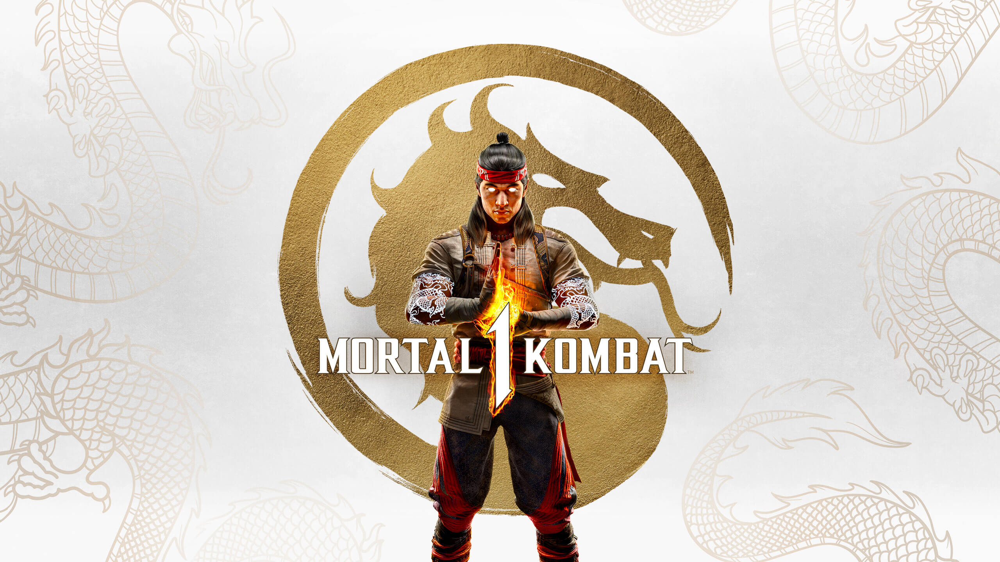

Mortal Kombat 1 Main Menu Theme
.For this final paper, I want to break down the both videos of Mortal Kombat 1

center>
Starting off with the bottom video of the main menu, the game starts off with a peaceful tune, but as the game continues to remain at the main menu you will notice that the tune will start to change into a more suspense and action tune that was looped from the beginning of the sound which kinda makes you realize what you will expect in the game.